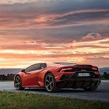
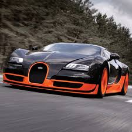
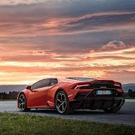
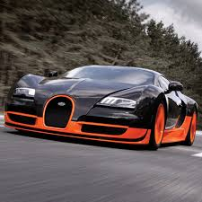

Автомобил, разговорно се използва кола, е моторно превозно средство (МПС) с повече от две колела или гуми, обикновено четири (тоест безрелсово), предназначено за транспорт, придвижване, както и превозване на пътници и багаж; също понякога и товари (при лекотоварните автомобили или бусове).Автомобилите се разделят на няколко основни групи: леки автомобили (за превозване на хора, обикновено 4 до 9 души) и лекотоварни автомобили; други типове са автобуси (за превозване на повече хора) и камиони (за превозване на товари), също тирове, както и специални автомобили (с монтирано специализирано оборудване, например такива за инвалиди, автокранове или пожарни коли).
Повечето автомобили имат четири колела, както и места за шофьор и поне един пътник до него, или най-често 3 до 4 пътника.